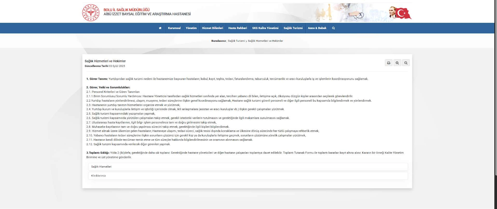
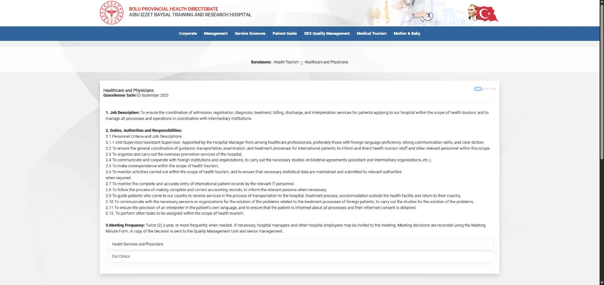

Yerelleştirme
Dil çifti:
Türkçe - İngilizce
İçerik Türü:
Kurumsal Web Sitesi / Arayüz Yerelleştirmesi
Açıklama:
TÜBİTAK destekli ÇAUSEP sektörel eğitim simülasyonu kapsamında, Bolu Abant İzzet Baysal Üniversitesi Eğitim ve Araştırma Hastanesi'nin "Sağlık Turizmi" web sayfası yerelleştirilmiştir.
Bu çalışmada; hastanenin idari tanımları, sağlık turizmi iş akışları ve kalite formları uluslararası hastaların beklentilerine ve kurumsal terminolojiye uygun olarak İngilizceye uyarlanmıştır.

